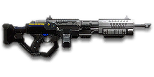

← Back to the NC6 Gauss SAW comparison
Sage Guide · New Conglomerate · Heavy Assault
The NC's original LMG and still the hardest-hitting one in the game. It costs 1,000 certs — so master the free GD-22S first, then buy this when you want its punch at range.
The one-line verdict: every bullet hits like a truck and the 100-round magazine never seems to end — but it fires slowly, kicks harder than any other LMG, and takes 6.5 seconds to reload. Fight at 10–50 metres, in short aimed bursts, and it will carry you.

The NC6 Gauss SAW · New Conglomerate · 100-round box magazine
Tap any section title to open or close it — section 01 starts open, the rest wait for you.
Picture the scene, because you've probably lived it: you're sprinting across a courtyard, an enemy appears, and you do everything at once — hold the trigger down while you're still running, then press aim-down-sights (ADS) a split-second later, finger still down. The sight picture snaps in, it looks precise… and your bullets spray everywhere except the man in your crosshair. He kills you. It feels like the game cheated. It didn't — here's what actually happened.
Three moments, one mistake. Read it left to right.
1 · SprintingYour cone of fire starts at 7.0° — fully bloomed, the widest it can ever be. Every hipfire shot widens it further (+0.14° per shot).
2 · ADS mid-holdYou press aim-down-sights — and nothing resets. The scope only gives you a precise picture; the bullets keep flying out of the wide cone you built while running.
3 · The sprayAccurate-looking aim, wildly inaccurate gun. Two timers stack the deck: ~0.3 s to settle after a sprint, and ~0.15 s to raise the sight. Trigger held through all of it means your first half-second of fire is pure confetti.
Same fight, done right. Stop, then aim, then fire — never all at once.
1 · StopLet go of sprint — and of the trigger, if you're already holding it. Stop, or drop into a strafe. Give the gun ~0.3 s to settle after the sprint.
2 · AimPress ADS and let the sight come up (~0.15 s). That's fine — your overshield (F) covers the wait. Now the cone is a true 0°.
3 · FireNow fire — in a short burst of 5. Starting from the aimed cone of 0°, your first shots land where the dot points, and you control the bloom from zero instead of inheriting a maxed-out cone.
You started firing from a sprint, from the hip. Sprinting is the least accurate state in the game: your cone of fire starts at 7.0° — fully bloomed, the widest it can ever be. Every shot you fire from the hip widens it further still (+0.14° per shot).
Then you pressed ADS mid-hold — and nothing reset. Aiming down sights does not shrink a cone of fire that is already bloomed. The scope only gives you a precise picture; the bullets keep flying out of the wide cone you built while running and hipfiring. That's the whole mystery: accurate-looking aim, wildly inaccurate gun.
Two timers stack the deck further: your gun needs about 0.3 s to settle after a sprint, and raising the sight itself takes ~0.15 s. Trigger held through all of it means your first half-second of fire is pure confetti.
1 · Feet. Let go of sprint (and the trigger, if you're already holding it). Stop, or drop into a strafe — anything but a full sprint.
2 · Sight. Press ADS and let the sight come up. This takes a heartbeat — that's fine, your overshield (F) covers it.
3 · Trigger. Now fire. Starting from the aimed cone of 0°, your first shots land where the dot points, and you control the bloom from zero instead of inheriting a maxed-out cone.
Stop → aim → fire. If you take one habit from this entire page, take this one. You'll practise exactly this rhythm in the simulator in section 04.
Every enemy infantry has 1,000 health (500 shield + 500 health). Your bullet does 200 damage up close, fading to 143 at long range — the hardest hit of any LMG, and the longest full-power stretch too. Headshots count double, leg shots count less (×0.9). That gives you three numbers worth memorising:
| Range | Damage | Head | Chest | Legs | Chest vs shielded Heavy |
|---|---|---|---|---|---|
| Close · 0–10 m | 200 | 3 | 5 | 6 | 8 |
| Mid · 10–54 m | 200→167 | 3 | 6 | 7 | 9 |
| Far · 54–85 m+ | 167→143 | 4 | 7 | 8 | 11 |
Perfect-accuracy times to kill: 3 headshots ≈ 0.24 s, 5 chest shots ≈ 0.48 s up close. In real fights you'll land maybe half your rounds — still, this is why the head matters so much on this gun. Each bullet is 0.03 m across at the hit check, a touch wider than most guns'. Damage per second: 1,667 up close, 1,192 at minimum.
Full power to 10 m, then a steady slide to minimum at 85 m — the longest reach of any LMG. The gold line shows High Velocity Ammunition: full power only to 8 m, but minimum damage pushed out to 105 m.
One gun, four fighting styles. The right technique changes with distance — use the range finder below to see what your bullets do at any range, then learn the four bands underneath it.
How to fight hereAim down sights at the upper chest and neck. Fire in bursts of 5 — your recoil climbs straight up into the head for free damage.
Aim: centre of the chest, from the hip. Keep moving.
Scoping in costs you time and halves your move speed — at arm's length that gets you killed. But be honest with yourself: this gun's hipfire is the worst of the starters (4.0° standing, 4.5° moving), so keep it truly close, strafe side to side (A/D) while firing, and let the overshield soak the return fire.
Aim: neck / upper chest. Bursts of 5 rounds.
This is where the gun earns its keep: full 200 damage, a true 0° first-shot cone, and a 100-round magazine. Start your crosshair at the neck — the recoil climbs straight up (no sideways bias at all), so it walks your shots into the head, and 3 head hits end the fight in under a quarter of a second. Strafe while scoped; you're slower, but a moving target still beats a still one.
Aim: chest. Bursts of 5 rounds, pause between them.
Damage is sliding toward 167 and your cone of fire blooms if you hold the trigger. Fire a burst, release for a split second to let accuracy reset, fire again. The recoil is the strongest of any LMG (0.55 per shot, 1.65× on the first), but it climbs straight up — pull your mouse gently down, no sideways correction needed. Crouch or stand still when you can — both tighten your shots.
Aim: chest. Taps of 3–5 rounds at exposed targets only.
At 143 damage you need 7 chest shots — and at 500 RPM that's a long, loud advertisement of your position. Take these shots at stationary or fleeing targets, medics reviving, and engineers on turrets. Otherwise, your better play is to close the distance behind cover. Knowing when not to shoot is a skill too.
Your accuracy is decided by two things before skill even enters it: what your body is doing (your stance sets the starting cone of fire) and what your finger is doing (holding the trigger grows that cone with every shot). The NC6 has no fire-mode switch — full-auto only — so "firing modes" are something you do with your finger, not a setting on the gun.
| Stance | Starting cone | What it means for you |
|---|---|---|
| Sprinting | 7.0° | Maxed out — the widest the cone can be. This is the section 01 disaster: never start firing from a sprint. |
| Hipfire, moving | 4.5° | Walking or strafing from the hip. The worst hipfire of the starters — fine inside ~8 m, leaks rounds past the target beyond it. |
| Hipfire, standing | 4.0° | Your point-blank default. The 0.56 m ring at 8 m in section 05 is this stance drawn out — wider than the chest even standing still. |
| Hipfire, crouched | 3.5° | The tightest hipfire you have (4.0° if you crouch-walk). Crouch when holding a doorway from the hip. |
| Aimed (ADS), feet planted | 0° | Standing or crouched makes no difference here — a true zero, the tightest first-shot cone of any LMG. This is why section 01's order matters. |
| Aimed (ADS), strafing | 0.4° + bloom | Same near-perfect start (0.2° if you crouch-walk), but you move at half speed (0.5×). Strafe between bursts to stay hard to hit; plant your feet during each burst. |
| Mode | How your finger does it | Use it at |
|---|---|---|
| The mag dump | Hold the trigger and don't let go | Point blank only, or suppressing a doorway. Bloom maxes out fast — aimed, the cone stops growing at 3.0°; from the hip, at 7.0° — and past ~8 rounds you're spraying, not aiming. The 100-round magazine forgives it more than most guns do. |
| Bursts — the default | Hold for 5 rounds, release ~0.15 s, hold again | Almost everything, 8–54 m. Each release resets the cone, so every burst starts at 0°. The aimed cone holds steady for about 5 shots before bloom starts to bite — that's why 5 is the number. |
| Tap-fire | Short taps of 3–5, or single clicks, with a real pause between | 54 m and out, at exposed or stationary targets. Slow, but every round goes where the dot is. |
A target 30 m away, aiming down sights. Press and hold FIRE (mouse, touch, or hold Space with the button focused) and watch the holes walk wider the longer you hold — that's firing from an ever-growing cone. Release, let the cone reset, fire again. Aim for bursts of 5; 6–8 is tolerable while you're new. This practice window is shared by the whole Sage series: it's driven by a weapon profile plugged into the window — here the NC6's (500 RPM, 0° starting cone, 0.06° bloom per shot, target at 30 m) — and the spread is drawn at true scale from those numbers.
Cone of fire — fills as you hold, empties when you release.
Your bursts will be graded here — green at 5 rounds, tolerable up to 8.
Some things are easier to show than to say. Here's what your bullets actually do: how wide hipfire spreads at 8 metres, what a good burst rhythm looks like, and what the 2x sight really changes. The hands-on version — holding the trigger yourself — is the practice window in section 04.
A full-size target 8 m away — an arm's-length room fight. The rings show where hipfire rounds land around your aim point (the chest). Sizes are drawn to scale from the gun's real cone-of-fire numbers.
Read it this way: standing still, the 0.56 m ring is already wider than the chest — even planted, hipfire leaks rounds at 8 m, which is why this gun's hipfire is a last resort, not a plan. Move and it grows to 0.63 m, so the edge rounds start leaking past him, and the rings only grow with distance while the man doesn't. Past ~10 m that's rounds missing entirely: the exact moment to switch to aiming down sights, where the spread shrinks to a dot. (Ring sizes use the real geometry: spread diameter = 2 × distance × tan(cone ÷ 2).)
Every shot widens your cone of fire ("bloom"). Releasing the trigger for a heartbeat resets it. Same 18 rounds, two very different outcomes:
The target pattern is bursts of about 5 rounds — that's the ideal. Bursts of 6–8 are fine while you're new (call it newbie tolerance). Past that, the bloom (0.06° per shot aimed, 0.14° from the hip) keeps growing with every shot, so the extra bullets mostly decorate the wall behind your enemy instead of hitting him. Short bursts also leave you rounds for the second enemy — and with a 100-round magazine and a 6.5-second reload, the rounds you save are the reload you don't have to take.
No zoom. The target at 35 m is small but the view is wide open — you see the crate, the tower, and the next enemy coming. Fast to aim, nothing blocks your edges. Best inside ~40 m.
Same target, same 35 m — but he looks twice as tall, so placing shots on his chest and head gets much easier. The price: your view narrows to the round window, the crate and tower are gone, and close targets feel fast and huge. Best at 25–50 m.
That's the whole 5-cert decision from section 06 in one picture: 1x for awareness, 2x for precision. Most veterans carry both and swap per base — indoors 1x, open ground 2x.
One warning first: unlike the GD-22S, the NC6 hands you almost nothing for free — the 1x reflex sight is yours, and that's it. The Forward Grip costs 100 certs here, and there's no extended magazine or Soft Point Ammunition on this gun at all. Everything below is an optional sidegrade, not an upgrade. Buy in the order shown and stop whenever the gun feels right.
A clean red-dot sight with no zoom. Your default, and honestly your best all-round option.
Good: everywhere indoors and out to ~40 m — which is most PlanetSide fights.
Bad: picking out targets past 50 m; that's what the 2x is for.
Doubles your view magnification. Costs almost nothing — the price of one kill or two. (Other reticles for it cost 30 certs; the red-dot version is the 5-cert one.)
Good: open-field bases, tower fights, and your 25–50 m burst game. Swap between 1x and 2x per fight.
Bad: tight indoor rooms — the zoom makes close targets feel fast and huge.
Night-vision sight: enemies glow white against a dark view, and it sees through smoke.
Good: night fights, smoky doorways, spotting infiltrators by their outline.
Bad: daytime and long range — its view is short-ranged and washes out in bright light.
LX Tacti-Eye / LACO (3.4x) and TrueShot / LX Mark IV (4x) — sniper-style magnification on an automatic LMG.
Good: almost nothing a beginner does — recoil magnifies too, and tunnels your vision.
Bad: any fight inside 30 m, which is where you'll spend your first hundred hours.
A 6x mil-dot scope — a sniper scope on a 500 RPM automatic. The magnification makes the NC6's heavy recoil feel enormous.
Good: nothing a new player needs. Leave it in the shop.
Bad: every real fight — you can't track a moving target through a straw.
The gun works fine bare. Spend your first certs on the grip before you touch this slot.
Good: your first weeks. The grip helps every shot; the barrel helps only some.
Bad: nothing — there's no downside to an empty slot.
Cuts vertical recoil by 30% (0.55 → ~0.39 per shot). Costs you: hipfire spread grows 15%, and enemies see you on the minimap from 35 m farther away when you fire.
Good: almost always on this gun — its vertical kick is the strongest of any LMG, so this is the single most impactful attachment you can buy.
Bad: hipfire builds and sneaky play — you get louder on the map and sloppier from the hip.
You vanish from the minimap when firing and your shots are quiet. In exchange, damage starts dropping off 20 m sooner and bullets fly 15% slower (600 → 510 m/s) — harder to lead moving targets.
Good: flanking behind enemy lines, rooftop and tree work, solo play behind the front.
Bad: front-line fighting where everyone already knows where you are — you pay the damage cost for stealth you don't need.
Cuts side-to-side recoil by 25%, keeping your bursts on a single target. Tiny cost: weapon swap is 0.15 s slower. Note: unlike the GD-22S, this grip is not free on the NC6 — you buy it.
Good: the default for aimed, mid-range play — leave it on until you deliberately build for hipfire.
Bad: nothing meaningful. It only stops helping if you never aim down sights.
Hipfire accuracy improves by a third (33% tighter cone — the 8 m ring shrinks from 0.56 m to 0.37 m standing). Replaces the Forward Grip — you can't have both.
Good: indoor point-holds and stairwell fights where you hipfire inside 8 m.
Bad: open bases — you give up aimed recoil control for a bonus you rarely use.
The first shot of each burst kicks 60% less vertically — but side-to-side recoil rises 10% on everything after it.
Good: disciplined burst and tap-fire at 40 m+, where every burst starts fresh — and this gun's first-shot kick (1.65×) is actually big enough for the trade to matter.
Bad: longer bursts, where the +10% sideways recoil on every later shot outweighs the one gentle first shot.
A torch whose beam reveals cloaked infiltrators. Toggle it with the attachment key (X by default).
Good: hunting a stalker infiltrator camping your capture point — sweep corners with it.
Bad: as your everyday rail — it gives zero accuracy help, and the beam advertises your position.
Bullets fly 10% faster (600 → 660 m/s) and minimum damage now holds out to 105 m instead of 85 m. Cost: full 200 damage only reaches to 8 m instead of 10 m.
Good: nearly always — faster bullets mean less lead on moving targets, and this gun's whole identity is range.
Bad: pure point-blank play, where the 2 m of lost full damage is the only thing you feel. A small price.
Prices below are attachment certs only — the gun itself costs 1,000 certs on top. Don't buy the gun and then have nothing left for the grip: budget for both.
0 certs on attachments · As bought
What the purchase hands you. Usable, but the recoil is raw and there's no grip — budget for the Forward Grip next, before anything else.
305 certs · Recommended
The classic "GODSAW" shape: tamed recoil, fast bullets, range for days. Covers every fight from a doorway to a tower courtyard.
200 certs · Indoor brawler
Built to hipfire down stairwells and hold a capture point room — quiet, no minimap blip, tight hipfire. Swap back to the All-Rounder outdoors.
330 certs · Long lane
For holding a ridge or a tower balcony at 40–80 m. The 3.4x finally earns its keep out here — but take it off indoors, where it blinds you.
Your overshield (F key) is extra health that only helps if it's on before the bullets arrive. Hear footsteps or expect a corner? Shield up, then peek. A shielded Heavy needs 8 chest shots to drop up close instead of 5 — that gap wins duels.
Headshots deal double damage: 3 kills up close versus 5 to the chest. Don't aim at the head directly — aim at the neck and let the gun's natural upward climb carry shots two and three into the skull. It's the single biggest damage upgrade you own, and it's free.
Every shot widens your cone of fire. Holding the trigger past ~8 rounds at range means later bullets fly around your target, not into it. Five rounds is the ideal burst; release the trigger for a heartbeat between bursts — your accuracy resets and your hits per magazine roughly double.
Reloading with even 1 bullet left takes 6.5 s; an empty gun takes 7.5 s — the slowest reload of any LMG, longer than a rocket launcher's. With 100 rounds you can afford to reload after every kill: fire ~50 rounds, duck behind cover, reload, repeat. Treat the last 20 rounds as your emergency reserve, not your working magazine.
Walk with your crosshair at head height, pointed where an enemy's head will appear — a doorway edge, a corner, stairs. Most beginners lose fights in the half-second spent dragging the crosshair onto target. While firing, tap A/D to strafe: a moving Heavy is dramatically harder to headshot back.
Your damage, accuracy and shield all shine at close-mid range, and your 100-round magazine lets you win the second fight without reloading. Sprint between cover, use buildings and rocks as stepping stones, and arrive at your range before opening fire. The player who chooses the range usually wins the duel — make it you.
Every gun has a price. Here's where the NC6 pays — and the habit that covers each hole.
500 RPM. Up close you still kill in 0.48 s — the same as a CARV — because your bullets hit so much harder. But past 10 m the 750 RPM guns pull ahead (0.56 s to your 0.60 s at mid-range), and every miss costs you 120 ms, the longest gap between shots of any starter-adjacent LMG.
Play around it: don't trade fairly. Shield first, aim for the neck, and use corners — your per-bullet damage and accuracy win fights that start on your terms.
6.5 seconds with rounds left, 7.5 on empty — the slowest reload of any LMG. A Decimator rocket launcher reloads faster than this gun. Reload at the wrong moment and you're a spectator for a whole fight.
Play around it: reload after every kill, always behind cover (habit 4). Your 100-round magazine means you can fight two enemies before the reload is even due.
Each shot kicks 0.55 straight up, 1.65× on the first shot of a burst, with 0.175 sideways and up to 0.525° of sideways wander. In a long burst your aim climbs clean off the target's head — you'll see this clearly in the VR drill below.
Play around it: pull your mouse straight down while firing — no sideways correction, the climb has no bias. The Compensator and Forward Grip cut the worst of it, and the 12°/s recoil recovery is why the pause between bursts does real work.
4.0° standing, 4.5° moving — the hipfire ring at 8 m is already wider than a man's chest. An Orion or CARV will win a hipfire duel under 10 m without trying.
Play around it: don't hipfire-duel past arm's length. Inside 8 m, strafe and let the overshield carry you; past it, aim down sights — your 0° aimed cone is the best in the class.
Like all LMGs, you move at half speed while aiming down sights (0.5x), and the gun takes a full 1.2 s to swap to — slow if a fight surprises you with your rocket launcher out. It also costs 1,000 certs: a deliberate purchase, not a free starter.
Play around it: hipfire inside 8 m instead of scoping (that's the Point Hold build's whole idea), and swap weapons behind cover, never in the open.
Open the world map, travel to VR Training, and run these on the target dummies. Five minutes before a play session beats an hour of dying confused.
Aim at a wall 20 m away and empty a full magazine without touching the mouse. Watch the bullet pattern climb straight up — that's your gun's fingerprint: no sideways bias at all. Repeat, this time pulling straight down, until the group stays fist-sized.
Walk the dummy range keeping your crosshair glued to neck height the whole time, snapping to each new target without dipping to the floor or sky. Slow and clean first; speed comes on its own.
At 30–40 m, kill dummies with bursts of 5, releasing the trigger fully between bursts. If a burst goes wide, shorten it. Goal: whole kills without a single wild round.
Pick a dummy, stand 5 m away, and circle it with A/D while hipfiring it down without stopping. This is your point-blank survival skill — the one that fires while your shield and movement do the defending. Remember the 0.56 m ring: at 5 m it still covers the chest, at 8 m it doesn't.
Fire exactly 50 rounds, step behind a pillar, reload, repeat. Train your hands to reload early and only in cover until it's automatic — with a 6.5-second reload, doing it in the open is a death sentence, and in real fights you'll do it without thinking, which is the point.